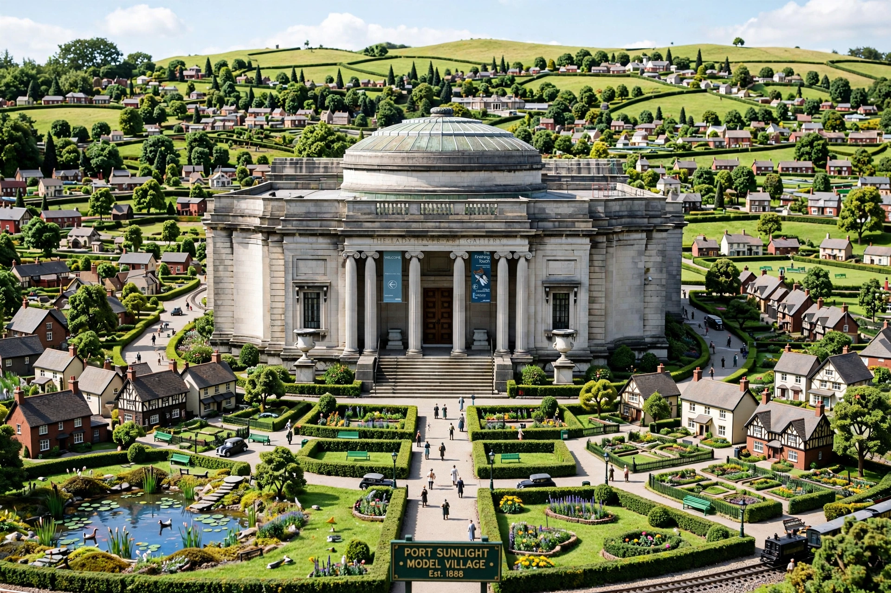

| Established | 1922 |
|---|---|
| Location | Port Sunlight, Wirral, England |
| Founder | William Lever, 1st Viscount Leverhulme |
| Part of | National Museums Liverpool |
The Lady Lever Art Gallery is a museum in Port Sunlight, Wirral, England, founded in 1922 by William Lever, 1st Viscount Leverhulme, in memory of his wife Elizabeth (Lady Lever). It houses one of the finest collections of fine and decorative art in Britain, and forms part of National Museums Liverpool.
Lever collected chiefly British art of the 18th and 19th centuries. The gallery is renowned for its Pre-Raphaelite paintings, including works by Dante Gabriel Rossetti, Edward Burne-Jones, and Ford Madox Brown, alongside paintings by Joshua Reynolds, Thomas Gainsborough, and J. M. W. Turner. It also holds outstanding collections of Wedgwood jasperware — the finest in the world — Chinese porcelain, English furniture, and Napoleonic artefacts.
Designed in Beaux-Arts style by William and Segar Owen, the gallery is the centrepiece of Port Sunlight, the model village Lever built for workers at his Lever Brothers soap factory. The foundation stone was laid in 1914 and King George V opened the gallery in 1922.